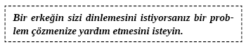

9. BÖLÜM - SAMİMİ İLİŞKİLERDE İLETİŞİM KURMA
Söylediklerimi düşünene kadar orada oturacaksın.
ANNEM
Zirvedeki Kadınlar
KADINLAR, türümümüzün İLİŞKİ ODAKLI iletişimcileridir. Erkekler genelde görev ve sonuç odaklı taraftır. Kadınlar ilişki kurmaya ve önemsedikleriyle samimi iletişim kurmaya odaklanırlar.
Bin yıldır erkekler, kadınların yöntemleri yüzünden şaşkına dönmüşlerdir. Kadınlar da erkeklerin yöntemleri yüzünden... Bunun nedeni basittir: Erkekler ve kadınlar benzer düşünmezler. Kadın erkeğe barda yaklaşırsa ve öncesinde konuşmadan ona çıkma teklif ederse erkek, kadını çekici bulmuşsa büyük ihtimalle teklife olumlu yanıt verir. Erkekler böyledir. Erkekler eğer bir kadının, onları tanımadan çıkma teklif edecek kadar yani fiziksel açıdan çekici bulduğuna inanırlarsa bununla çok gurur duyarlar.
Öte yandan kadınlar, böyle bir teklifi aşağılayıcı bulurlar. Kadınlar, çıkma teklifine olumlu yanıt vermeden önce erkeğin kendilerine ilgi duyduğunu hissetmeye ihtiyaç duyarlar. Çoğu kadın, kendisiyle vakit geçiren bir erkeğin saygısını kazandıklarına inanırlarsa teklifi kabul etmeyi mantıklı görür.
Kadınlar karşılıklı olarak, eşit miktarda paylaşımın yaşandığı iletişimi tercih ederler. İnsanlar iletişime katıldıklarında, kendileriyle ilgili içten deneyimlerinden bahsedenler daha çok takdir edilir.
Minnesota’daki çeşitli yetişkin eğitim kurumlarında, ayda yaklaşık bir kere ‘Karşı Konulmaz Çekicilik’ adlı bir ders veriyorum. Bu ders, erkeklerin ve kadınların karşı cinsin kendilerinde neleri çekici bulduklarını öğrendikleri tek gecelik bir deneyimdi. Kadınlar, bana düzenli olarak erkeklerin onlara çıkma teklif etmeden önce onlarla bir tür ilişki kurmak istediklerini söylüyorlardı. Bu ilişki (gerçekten sohbetten başka bir şey değil) bir saat kadar kısa olabilir. Kadınlar ciddiye alınmayı arzularlar. Kadınlar, daha samimi bir ilişki kurma girişiminde bulunmadan önce erkeklerin kendilerini bir derece tanıdığını hissetmelerini sağlayacak düzeyde muamele görmek isterler.
Cinsiyetiniz ne olursa olsun kadınlarla iletişimde onların paylaşım isteklerini ve bunun daha derin ilişki kurmanın normal yolu olduğunu unutmayın.
Erkeğe Çözecek Bir Problem Verin
Erkekler problem çözen varlıklardır. (Biz de başka tür varlıklarız ama genetik olarak problem çözmeye programlanmışızdır.) Bir erkeğin ilgisini çekmek istiyorsanız o zaman çözebileceği bir problem sunun. Çoğu kadın erkeklerin problem çözme dürtüsünü anlamaz. Kadınlar hiçbir çözüm beklentileri olmadan problemlerinden konuşmayı ve deneyimlerini paylaşmayı tercih ederler. Aslında kadınlar, erkekler probleme ve güçlüğe hemen çözüm sunduklarında kendilerini aldatılmış hissederler. Erkekler için tam tersidir.
Erkeğe bir problem sunun. O zaman sizinle iletişim kuracaktır. Problemin nedenini bulmak için size sorular soracaktır. Ateşi başlatan kıvılcımı sizde arayacak ve ateşi söndürüp kış uykusuna çekilecektir. Çoğu erkek libidolarıyla yönetilen ve libidolarının istekleri karşılanmadığında sol beyinleriyle dikkatleri dağılan basit varlıklardır.
Erkekler bir sorunu çözmeye yardım edebileceklerine inanırlarsa dinlerler. Erkekler duyacaklarını, gelecekteki bir problemi çözmeye yardım edeceğini bildiklerinde dinlerler. Erkekler duyacakları şeyi faydalı bir amaca hizmet ediyorsa dinlerler. Erkekler problem çözme araçlarıdır. Çoğu erkeğin garajları tornavida, çekiç ve testere doludur. Bazı erkeklerin dünya sorunlarının cevaplarının olduğu çok kapsamlı kütüphaneleri vardır. Yine de ailelerini doyurma problemini çözmek için silahları, oltaları, ok ile yayları ve bıçakları bulunur. Erkeklerin problem çözücü olduğunu aklınızın bir köşesinde bulundurursanız konuşmak istediğiniz erkeklerin ilgisini çekmede bir adım öne çıkarsınız.
Çoğu erkeğin ego tatminine ihtiyacı vardır ama bunu onlara bakarak ve konuşarak anlayamazsınız. Sessiz olduklarında kendine güvenli görünürler. Problemleri çok iyi bir şekilde çözme eğilimleri vardır. Bir durumu üstlendiklerinde ve başa çıkabilecekleri güçlükle karşılaştıklarında kendilerini çok güvenli hissederler. Eğer bir erkeğin söyleyeceklerinizi dinlemesini istiyorsanız kendilerine güven oranlarını artırmalarına yardımcı edin.
Bir erkeğe mükemmel, yakışıklı ve nazik olduğunu söyleyerek kendine güvenini artırabilirsiniz. Bunlar doğru olmasa bile bütün erkekler tarafından takdir edilir. Bir erkekle iletişim kurmak istiyorsanız kendine güveninin artacağı bir aktiviteye dâhil edin. İyi olduğu bir projede birlikte çalışın.
Bir grup erkeğin kaputu açıkken bir arabanın etrafında toplanıp konuştuğunu fark ettiniz mi hiç? Çözülmesi gereken bir problem var ve iletişim kolay geliyor. ‘Kaputu açık’ olan erkek (avcı, marangoz, bilim adamı veya sanatçı olsun) sohbeti dikkatle dinler. Bilgeliğini paylaşacak ve yüzeysel de olsa akla yatkın fikirleri dinleyecektir.

Bu ve bir sonraki bölümde, kişiler arası iletişimde yapılan en yaygın hataları öğreneceksiniz. Bu hatalardan kaçınırsanız hayatlarınız değişir.
HATA #1: Arkadaşlarınızın Bir Adım Önde Olmasını Sağlamak: Başkalarının Deneyimlerini Nasıl Geçersiz Kılarsınız?
“Sizi hiç dinlemiyorum ama benim söyleyeceğim çok önemli.”
Bill: Korkunç bir gün geçirdim. Bir saatten fazla trafiğe takıldım.
John: Bu hiçbir şey. Ben iki saat trafikteydim.
John, Bill’in deneyimini geçersiz kıldı ve aradaki iletişimi kesti değil mi? John, Bill’in kendisi için arkadaşlık anlamında önemini bilmesini sağlayıp aynı zamanda kendi kötü gününü de paylaşarak durumu nasıl başka türlü ele alırdı?
KONUŞARAK ZİRVEYE ÇIKMAK – İPUCU #1: Benzer Bir Hikâye Paylaşmadan Önce Sonuna Kadar Dinleyin
Bill: Korkunç bir gün geçirdim. Bir saatten fazla trafiğe takıldım.
John: Tüh ya! Şehrin etrafındaki büyük yollara bir şerit daha eklemeleri gerekiyor. Eve acele mi gitmen gerekiyordu? Yoksa sadece trafik sıkışıklığından dolayı mı sinirlendin?
Bill: İkisi de değil. Yetişmem gereken bir toplantı vardı ve geç kalmıştım. Bu yüzden patronum, yetişmek için inanılmaz uğraştığım toplantıyı düşük bir öncelik olarak gördüğümü sandı.
John: Bu durumu ona açıklayabildin mi?
Bill: Hayır. Ortamda çok fazla insan vardı ve bahaneler patron için sadece bahanedir.
John: Bu işini etkileyecek mi?
Bill: Hayır. Satışlarım ilk %10’da. Ben sadece topluluğun önünde kötü görünmekten hoşlanmıyorum. Çok da önemli olduğundan değil.
John: Anladım. Bugün akşam yemeği için eve gidiyordum. Toplantım falan yoktu. Sadece eve, Christa ve çocukların yanına gitmek istiyordum. Otoban çıkışında kaza olmuştu. Trafik çok uzun süre sıkıştı ama en azından bir toplantıyı kaçırmadım.
İlk senaryoda John, Bill’in deneyimini kültürümüzde tipik ve yaygın olan bir şekilde geçersiz kıldı. Bu her gün yaşanır ve hepimiz elbet birilerini gücendirmişizdir. Başkalarıyla ilişkilerimizi geliştirmek için istediğimiz şey, önemsediğimiz insanlarla konuştuğumuzda ve başkalarının endişelerini, ihtiyaçlarını dinlediğimizde ‘kendimizden geçmek’ durumudur.
Biz kendi ihtiyaçlarımız ve ilgilendiklerimizden bahsetmeden önce karşımızdakinin artık rahatsız olmayana kadar kendi problemlerinden bahsetmelerine izin vermek neredeyse en iyi yoldur. Nedeni basit: Bir insan kendi dünyasına dalınca (ben bunu özümsemek olarak adlandırıyorum) size ne olduğuyla neredeyse hiç ilgilenmeyecektir. Bir insan dinlendiğinde ve ‘içini tamamen dökebildiğinde’ kendi dünyasındaki (özümseyen) insan yavaş yavaş gerçek dünyaya dönebilir ve başkalarıyla, bu durumda sizinle ilgilenebilir.
İletişimde hepimizin yaptığı yaygın hata, tek iletişimde aynı anda iki ya da daha fazla mesaj vermeye çalışmaktır. Bu, mutabakata varılmasına ve iki insanın ortak ilgilerinden bahsetmesine imkân tanımaz. Diğer kişinin bütün hislerini, bir güçlük hakkındaki sıkıntılarını ortaya dökmesine izin verdiğinizde sizinkileri dinleme ve onları önemseme olasılığı daha yüksektir.
HATA #2: Problemimi Çözme, Yalnızca Beni Dinle!
İletişimdeki bu tarz sorunlar erkekler ve kadınlar arasında çoğunlukla büyütülür. Kadınlar genellikle birisi tarafından kesinlikle çözülmesine ihtiyaç duymadan problemlerini ifade etme ihtiyacı hissederler. Yalnızca diğer insanların dinleyip empati kurmalarını isterler. Erkeklerin bazen kadınların iletişim ihtiyaçlarını nasıl anlamadıklarına dair bazı örnekler:
Jan: Bugün işte korkunç bir gün geçirdim. Patron toplantıdaki herkese fotokopi dağıtmadığım için bana bağırdı.
Richard: Hiç sorun değil. Bir dahaki sefere fazladan fotokopi çektir ki herkese yetsin olsun.
Jan: Bunu ben de biliyorum. Söylemene gerek yok Richard. Aptal değilim.
Richard: Aptal olduğunu söylemedim. Sadece bütün raporların fazladan fotokopisi olsa iyi olur dedim. Önceden düşünseydin bu problemleri yaşamazdın.
Jan: Önceden düşünüyorum Richard. Bütün yönetici asistanlarının da orada olacağını bilmiyordum. Neden her seferinde kendimi aptal gibi hissetmeme neden oluyorsun?
Richard: Senin aptal gibi hissetmene neden olmaya çalışmıyorum. Patrona toplantıda kaç kişi olacağını sorup onlar için ve birkaç tane de fazladan fotokopi hazırlayabilirdin.
Jan: İsim listesini kontrol ediyorum yani kaç kişinin geleceğini biliyorum. Orada kimlerin olacağına dair bir iletişim kopukluğu vardı. Benim hatam değildi.
Richard: Her neyse. Kısa kessem iyi olacak. (Kalkar gider.)
Jan: (Depresif bir halde oturur.)
KONUŞARAK ZİRVEYE ÇIKMAK – İPUCU #2: Bazen Dinlemek Sorunlarını Çözmekten Daha İyidir
Richard ve Jan büyük bir tartışmanın daha başlangıcını yaptılar ve bu, çok önemsiz bir şeyden dolayı başladı. Richard sıkıntılı eşinin gününü nasıl kurtarabilirdi? Aşağıdaki Richard’ın Jan’in gün içinde yaşadığı sıkıntıları çözüme ulaştırmak değil onları sadece paylaşma ihtiyacını anladığındaki konuşmanın akışını dinleyin.
Jan: Bugün işte korkunç bir gün geçirdim. Patron toplantıdaki herkese fotokopi dağıtmadığım için bana bağırdı.
Richard: Ne oldu?
Jan: Aptal genel müdür bana bütün yönetici asistanlarının da orada olacağını söylemedi. Toplantıdaki herkese fotokopi çektirmediğim için aptal durumuna düştüm. O kadar sinirlendim ki ağlayabilirdim.
Richard: Birisi bir şey söyledi mi?
Jan: Herkes için yeterli rapor yoktu. Kendimi kötü hissettim. Kimse “Jan ne kadar da aptalsın” demedi. Sadece ben kötü duruma düştüm. Kaç tane rapor götüreceğimi kontrol etmek için önceden aramıştım halbuki. Çok utandım.
Richard: Gerçekten hayal kırıklığına uğramışsındır. Uğraşmak zorunda kaldığın bazı insanların bu kadar kendinden habersiz olmasına çok üzüldüm.
Jan: Evet, mükemmel olmanı bekliyorlar ama değilsin.
Richard: Şey, emin değilim. Benim gözümde mükemmele yakınsın. (Muzır bir gülümseme...)
Jan: (Muzır bir gülümseme ve ses tonu neşeli bir halde...) Sen yok musun sen!
HATA #3: Erkeklerin (Bazı) Problemlerini Çözmelerine Yardım Etmemek
Richard: Bahçedeki otlar çok gürleşmiş. Otların biçilmesi, sulanması gerekiyor ama benim bunu da boyayı da yapacak zamanım yok.
Jan: Tatlım, bu kadar iş yapmak zorunda olduğun için üzgünüm. Gerçekten anlıyorum.
Richard: Anlaman çok hoş ama anlayış evi boyamıyor ya da çimleri sulamıyor. Bana bir şekilde yardım edemez misin?
Jan: Tatlım canının sıkıldığını biliyorum.
Richard: Tabii ki canım sıkkın. Bugün yapılacak otuz saatlik iş var ve benim bunları yapmak için yalnızca yirmi dört saatim var. Çıldıracağım.
Jan: Yakında kış gelecek ve dışarıda yapılacak daha az şey olacak.
Richard: Bu çok klasik. Bir kere olsun “Hayatım çimleri senin yerine ben sulasam nasıl olur?” diyemez misin?
Jan: Seni anlayamıyorum. Her zaman benim tembel olduğumu söylüyorsun. Burada senin için çalışmaktan canım çıkıyor.
Richard: Peki ben senin için ne yapıyorum?
Jan: Ben senin yarın kadar söylenmiyorum ve en azından sorunların olduğunda dinliyorum. Sen her seferinde bana ne yapmam gerektiğini söyleyip duruyorsun.
Yakın zamanda olacak bu Titanik benzeri facia nasıl önlenebilir? Şimdi Jan’in Richard’ı anladığı yeni sahneye bakalım.
KONUŞARAK ZİRVEYE ÇIKMAK – İPUCU #3: Nazikçe Erkeklerin Problemlerini Çözmelerine Yardımcı Olun
Richard: Bahçedeki otlar çok gürleşmiş. Otların biçilmesi, sulanması gerekiyor ama benim bunu da boyayı da yapacak zamanım yok.
Jan: Haklısın. Bu bir kişinin yapamayacağı bir iş. Bir şeyler ayarlayabiliriz. Sen çimleri biçtikten sonra ben sulayabilirim veya apartmandaki çocuklardan birine çimleri biçip sulamaları için yirmi dolar verebiliriz. Sence ne yapalım?
Richard: Gerçekten bilmiyorum. Para vermekten nefret ediyorum ama bu hafta onu biraz dinlenmeye ihtiyacım var.
Jan: O zaman parayı unut. Komşunun çocuğunu arayacağım ve çimleri biçtirip sulatacağız. Böylece çok sıkıntıya düşmeden sen de evi boyayabilirsin.
Richard: Teşekkürler Tatlım. O zaman belki bize de biraz zaman kalır.
Biraz mutluluk veya zevk yaşamaya dair aynı nihai amaçları olsa da erkekler ve kadınların iletişim ihtiyaçları genellikle çok farklıdır. Mutluluk ve zevke giden yol, insanlarla bizim iletişim kurmak istediğimiz şekilde değil onların istedikleri şekilde konuşmaktan geçer. Şüphe duyduğunuzda genel kural şu: Kadınlar, probleminin dinlenmesini ister; yaşadıkları şey için empati, anlayış ve takdir beklerler. Kendileri gelip sorana kadar problemlerine çözüm aramazlar ve çözüm bulmak için yardım istemezler.
Öte yandan erkekler sorunları çözmek ve hedef odaklı davranışta bulunmak amacıyla iletişim kurarlar. Hiçbir amaca hizmet etmeyen iletişimlere dâhil olmak istemezler. Bunu çoğunlukla zaman kaybı olarak görürler.
Bu kuralın istisnası, sıklıkla yaşanan erkeklerin kaybolması durumunda gerçekleşir. Erkekler bir yerden bir yere giderken yollarını bulmada yardım istemezler. Bu yüzden bir erkekle birlikte kaybolursanız bunu kendinize saklayın ve hiçbir şey olmamış gibi davranın.